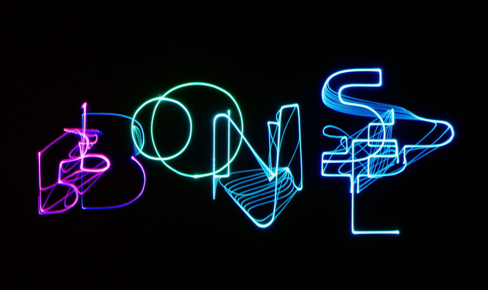
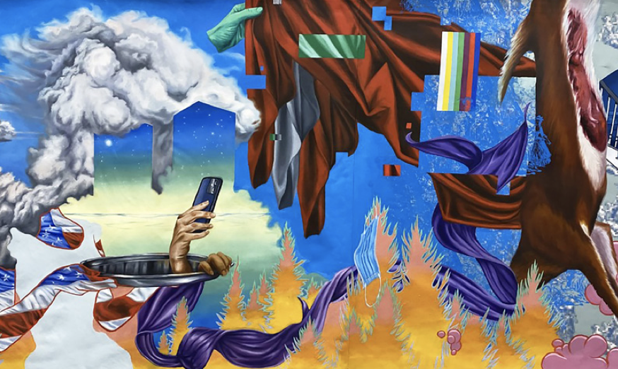
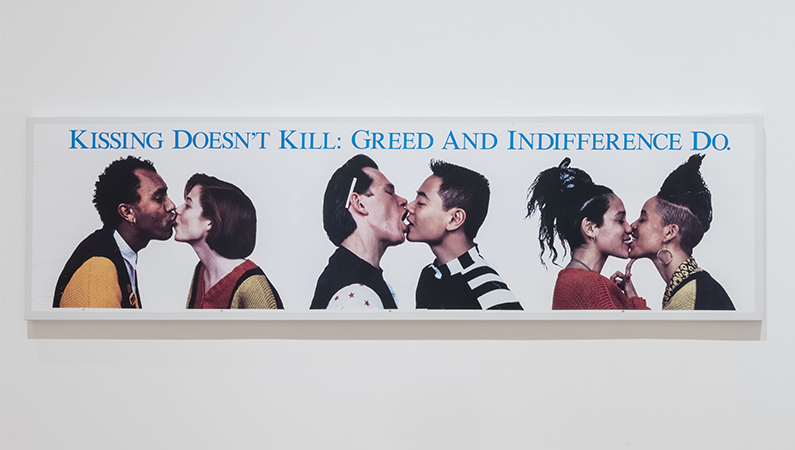

NICOLE MILLER: A SOUND, A SIGNAL, THE CIRCUS
 Known for her evocative videos and multimedia installations, California-based artist and filmmaker Nicole Miller frequently addresses themes such as race, translation, and the politics of representation. At the Mildred Lane Kemper Art Museum, she is creating a major new commissioned project that explores and expands an understanding of synesthesia as it relates to the Black experience in the United States through an intricate choreography of sound, moving image, and laser-light animation. Titled A Sound, a Signal, the Circus, this immersive installation engages with the sonic, the somatic, and aspects of spectacle to enact what the artist describes as a kind of “ecstatic translation.” The exhibition will be on view March 25 to July 25, 2022.
Miller's 24-channel soundscape will direct viewers through the gallery. It is composed of recorded and appropriated sounds and music, along with edited excerpts from interviews that she conducted in St. Louis in the summer and fall of 2021. In these interviews, poets, dancers, educators, and teenagers of color share a range of perspectives—personal, political, philosophical, and creative—often drawing connections to their own bodies. Punctuating this sonic tapestry will be choreographed laser light and video footage of performers rehearsing, many of whom are preparing for roles in various circuses.
Notions of embodiment and articulation are common threads throughout Miller's work. In recent years, a core aspect of her practice has involved collaborating with young people, especially youth of color. The exhibition at the Kemper Art Museum builds on previous video installations that examine how societal pressures and the violence of racism condition the experience of growing up in the United States, including how youth are perceived.
By inserting the voices of those who are just figuring out how to tell their stories into the context of an art museum, Miller challenges us to see these young people not through the lens of latent potential (or lack thereof) but as “brilliant in the here and now.”
Miller is also attuned to performances and performers, from renowned artists to those who are new to their craft. She gravitates to spaces of practice and rehearsal, and frames expressive articulation as an ongoing process rather than a point of arrival. The sound of disembodied voices in Miller's new soundscape—each with their own observations and inflections—and the sight of bodies moving through space sets up the potential for a heightened consciousness of one's own body while provoking questions about whose bodies are valued in society, whose voices are amplified, and whose lives are cherished.
Nicole Miller: A Sound, a Signal, the Circus is organized for the Kemper Art Museum by Meredith Malone, curator. The work is produced in collaboration with sound mixer and musician John Somers and laserist Zak Forrest.
NINE WAYS FROM SUNDAY: 2022 MFA IN VISUAL ART THESIS EXHIBITION
 Nine Ways from Sunday features thesis projects by the MFA in Visual Art candidates in the 2022 graduating class of the Sam Fox School's Graduate School of Art. MFA candidates present artworks in various media, exploring a broad range of themes, including spatial politics, desire and commodity fetishism, technology and the natural world, the Black Imaginary, and diasporic cultural identities.
The 2022 MFA in Visual Art candidates are Karina Arreola-Gutierrez, Quinn Antonio Briceño, Joseph Canizales, Noah Greene-Lowe, Erin Johnston, Martin Lammert, Sam Modder, Carlos Salazar-Lermont, and Livia Xandersmith.
Nine Ways from Sunday: 2022 MFA in Visual Art Thesis Exhibition is organized by Leslie Markle, curator for public art, Mildred Lane Kemper Art Museum. Support is provided by the Sam Fox School of Design & Visual Arts.
CHITRA GANESH: DREAMING IN MULTIVERSE
 With an overarching interest in the possibilities of visual narratives, Chitra Ganesh draws on Buddhist and Hindu iconography, science fiction, queer theory, comics, Surrealism, Bollywood posters, and video games, combining them with her own visual imagery and drawings to present speculative visions of society in the past, present, and future. Her exhibition at the Mildred Lane Kemper Art Museum presents a series of recent prints as well as several video animations that exemplify her practice of experimental storytelling.
Thirteen digital prints collectively titled Multiverse Dreaming will be installed in the Museum's Saligman Family Atrium. Inspired by Amar Chitra Katha (literally Immortal Picture Stories)—a popular comic book series originating in 1960s India including tales of epic myth, folklore, and history of the South Asian subcontinent—Ganesh uses the series as a point of departure, repurposing the comic form to present nonlinear narratives that focus on themes of reflection, regeneration, togetherness, and desire in times of uncertainty. Ganesh's interweaving of disparate visual idioms, poetic texts, and shape-shifting bodies invites viewers to consider broad utopian possibilities while also tapping into a collective memory for audiences in India and its diaspora that have grown up reading these comics. The project notably centers women, femme bodies, and queer relationships, reorienting traditional narratives around experiences and communities that have been marginalized, historically in her source material as well as in the contemporary art world.
A selection of Ganesh's animations will be screened in the Museum's Video Gallery, including her latest animation, Before the War (2021). Described by the artist as “an open-ended narrative of memory, love, and loss,” the visual storytelling, combined with music and lyrics by the singer and songwriter Saul Williams, probes how personal and political conflicts are often intertwined and can be bearers of profound transformation.
Chitra Ganesh: Dreaming in Multiverse is generously supported by the Siteman Family Charitable Fund. It is organized by Meredith Malone, curator.
With an overarching interest in the possibilities of visual narratives, Chitra Ganesh draws on Buddhist and Hindu iconography, science fiction, queer theory, comics, Surrealism, Bollywood posters, and video games, combining them with her own visual imagery and drawings to present speculative visions of society in the past, present, and future. Her exhibition at the Mildred Lane Kemper Art Museum presents a series of recent prints as well as several video animations that exemplify her practice of experimental storytelling.
Thirteen digital prints collectively titled Multiverse Dreaming will be installed in the Museum's Saligman Family Atrium. Inspired by Amar Chitra Katha (literally Immortal Picture Stories)—a popular comic book series originating in 1960s India including tales of epic myth, folklore, and history of the South Asian subcontinent—Ganesh uses the series as a point of departure, repurposing the comic form to present nonlinear narratives that focus on themes of reflection, regeneration, togetherness, and desire in times of uncertainty. Ganesh's interweaving of disparate visual idioms, poetic texts, and shape-shifting bodies invites viewers to consider broad utopian possibilities while also tapping into a collective memory for audiences in India and its diaspora that have grown up reading these comics. The project notably centers women, femme bodies, and queer relationships, reorienting traditional narratives around experiences and communities that have been marginalized, historically in her source material as well as in the contemporary art world.
A selection of Ganesh's animations will be screened in the Museum's Video Gallery, including her latest animation, Before the War (2021). Described by the artist as “an open-ended narrative of memory, love, and loss,” the visual storytelling, combined with music and lyrics by the singer and songwriter Saul Williams, probes how personal and political conflicts are often intertwined and can be bearers of profound transformation.
Chitra Ganesh: Dreaming in Multiverse is generously supported by the Siteman Family Charitable Fund. It is organized by Meredith Malone, curator.
(UN)MASKING HEALTH: COUNTER PERSPECTIVES
 As we continue to navigate in the United States both an ongoing health pandemic and an epidemic of racism, public health officials and media outlets are bombarding us with conflicting advice about how to protect our well-being. The research and policies related to these recommendations, however, often fail to address racism as a health problem too. To offer some insights for processing our current reality under masks, (Un)masking Health: Counter Perspectives asks a seemingly straightforward question: What is health?
While North American and Western European societies have traditionally considered health as a benevolent state of being free from illness, (Un)masking Health examines it as a contested arena embedded in exclusionary ideologies of race, gender, sexuality, ability, and class. The exhibition includes a range of artworks, from the 1960s to today, in the collection of the Mildred Lane Kemper Art Museum in dialogue with archival ephemera from Washington University Libraries’ Special Collections. In addition to scrutinizing notions of what a healthy body is—and according to whom—(Un)masking Health also invites us to reconsider the role that historical and contemporary grassroots movements, including the ongoing AIDS movement and the Movement for Black Lives, have had in connecting issues of health and social justice.
Works by Diana Guerrero-Maciá, Sol Mednick, and Bruce Davidson ruminate on commodified body images and their ties to whiteness, fitness, and racial stereotypes. In the work of Gran Fury, Jenny Holzer, Bob Hansman, and charles ryan long from the 1980s to the present, focus is placed on the role of public art in the ongoing AIDS movement, demonstrating passionate engagements for queer well-being amid gross governmental negligence. Links are also drawn to the legacy of the Civil Rights movement during the 1950s and 1960s and its demands to protect disenfranchised Black life in the contemporary work of artists including Glenn Ligon and Willie Cole.
(Un)masking Health: Counter Perspectives is curated by Ivan Bujan, postdoctoral fellow in the Department of Women, Gender, and Sexuality Studies in Arts & Sciences, in conjunction with his seminar “Queering the History of Health” in spring 2022.